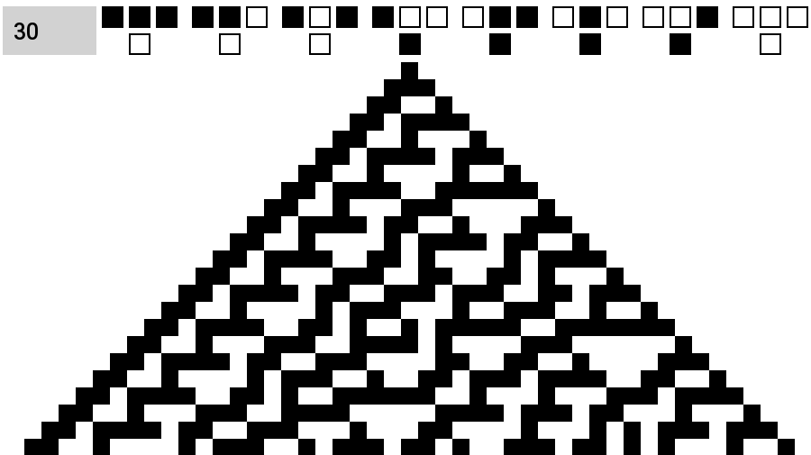
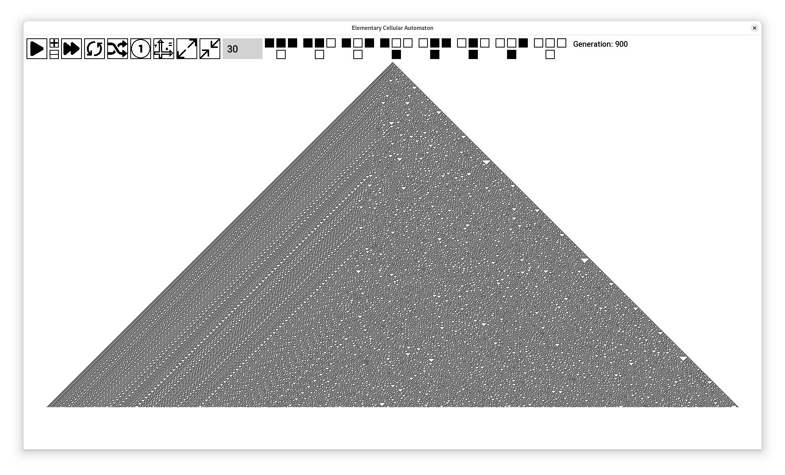

Los autómatas celulares (AC) fueron concebidos por John Von Neumann en 1948 mientras buscaba diseñar un sistema capaz de auto-replicarse. Stanislaw Ulam le sugirió modelar matemáticamente este concepto, lo que llevó a la creación de los AC.
Se caracteriza por su simplicidad y comportamiento divergente. Sus características incluyen:
La Regla 30 presenta un comportamiento aparentemente aleatorio. A continuación, se muestran ejemplos de su evolución:
 Se diseñó un programa en C++ para generar y almacenar generaciones de la Regla 30 en archivos binarios.
#include <iostream>
int main() {
std::cout << "Hola, mundo!" << std::endl;
return 0;
}
Se analiza la columna principal de cada generación para encontrar patrones en la frecuencia de aparición de unos y ceros.